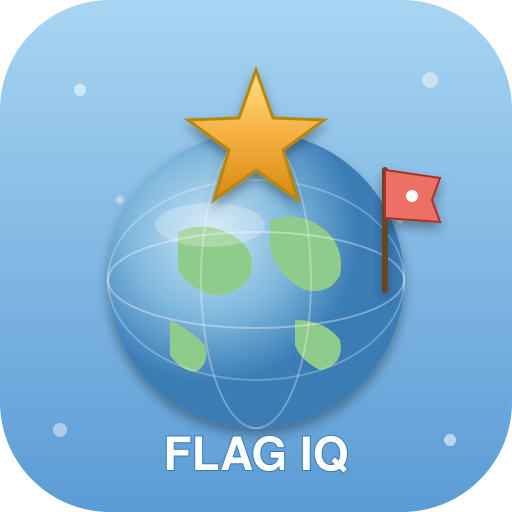

Flag IQ
World Millionaire
Level 1
Rp 0
Flag IQ
World Millionaire
Tebak
…
bendera dari seluruh dunia 🌍
▶ Mulai Bermain
🏆 High Scores
ℹ️ About
Siapa Namamu?
Skor kamu akan tercatat di leaderboard 🏆
▶ Mulai
← Kembali
Loading flag…
Fun Facts
💡 Extra clue:
👨👩👧
🌐 Negara apa ini?
Bantuan
5️⃣0️⃣
50 : 50
💡
Petunjuk
👨👩👧
Mama/Papa
📊 Hadiah
💼 Walk Away
⟲ Restart
🎉
Title
Body
OK
Restart